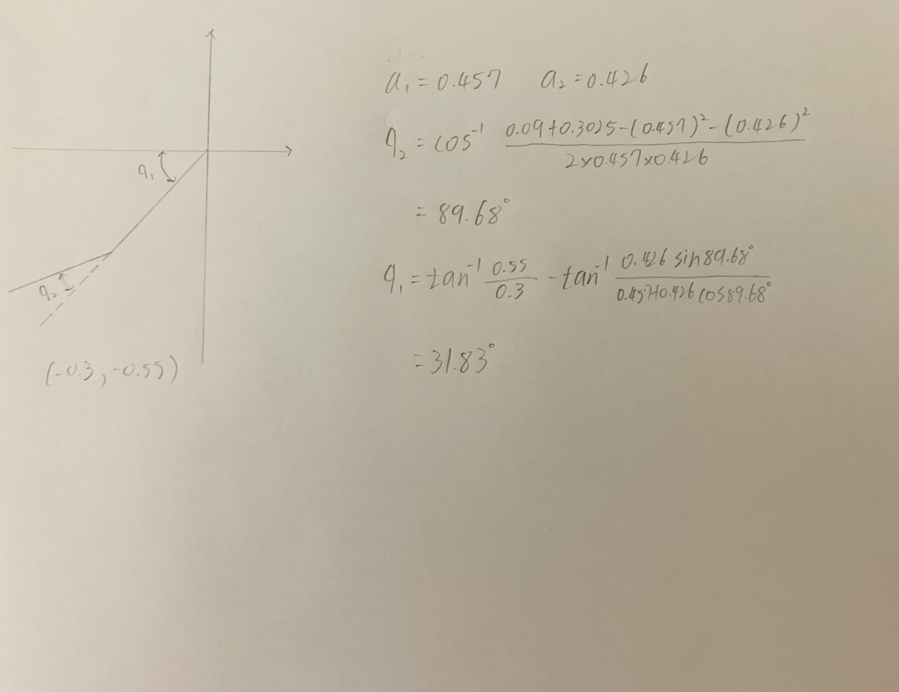

W15 <<
Previous Next >> W17
W16
MTB_robot 的取放方塊流程規劃 (Process Planning):
1. Onshape 零組件繪製:
繪製影片:
利用onshape建立各部份零組件
Link1
Link2
Link3
Base
MTB.dwg
MTB.stl
2. 建立 CoppeliaSim 4.1.0 MTB robot 場景
檔案:
MTB-2.ttt
MTB-2.lua
操作與講解
下方為lua程式:
function move(j1,j2,j3,j4)
modelBase=sim.getObjectAssociatedWithScript(sim.handle_self)
modelName=sim.getObjectName(modelBase)
jointHandle={}
j={j1*math.pi/180,j2*math.pi/180,j3*math.pi/180,j4*math.pi/180}
for i=1,4,1 do
jointHandle[i]=sim.getObjectHandle('MTB_axis'..i)
sim.wait(1)
end
for i=1,4,1 do
sim.setJointPosition(jointHandle[i],j[i])
sim.wait(1)
end
end
function sysCall_threadmain()
move(0,0,0,0)
move(30,30,0,0)
move(60,60,0.5,0)
move(0,0,0,30)
move(30,0,0,0)
move(0,0,0,0)
end
3. 手臂末端加入 components-gripper-suction pad 吸盤
檔案:
W16_keyboard.ttt
mtb_w16b.lua
mtb_w16s.lua
操作與講解
下方為主程式:
function sysCall_init()
axis1=sim.getObjectHandle('MTB_axis1')
axis2=sim.getObjectHandle('MTB_axis2')
axis3=sim.getObjectHandle('MTB_axis3')
axis4=sim.getObjectHandle('MTB_axis4')
mtb3=sim.getObjectHandle('MTB_link3')
suctionPad=sim.getObjectHandle('suctionPad')
BaseFrame=sim.getObjectHandle("BaseFrame")
block =sim.getObjectHandle("block")
deg1 = 0
deg2 = 0
distance3 = 0
modelBase=sim.getObjectHandle(sim.handle_self)
robotBase=modelBase
robotName='suctionPad'
deg = math.pi/180
end
function sysCall_actuation()
calibration = 0.0042
message, auxiliaryData=sim.getSimulatorMessage()
while message ~= -1 do
key=auxiliaryData[1]
sim.addStatusbarMessage('????? key:'..key)
if (message==sim.message_keypress) then
if (auxiliaryData[1]==112) then --p activate the suction pad
sim.setScriptSimulationParameter(sim.getScriptAssociatedWithObject(suctionPad),"active",'true')
end -- if p
if (auxiliaryData[1]==113) then --q deactivate the suction pad
sim.setScriptSimulationParameter(sim.getScriptAssociatedWithObject(suctionPad),'active','false')
end -- if q
if (auxiliaryData[1]==108) then --l
deg1 = deg1+0.4*deg
sim.setJointPosition(axis1, deg1)
end -- if l
if (auxiliaryData[1]==114) then --r
deg1 =deg1-0.4*deg
sim.setJointPosition(axis1, deg1)
end -- if r
if (auxiliaryData[1]==103) then --g
deg2 =deg2-0.4*deg
sim.setJointPosition(axis2, deg2)
end -- if r
if (auxiliaryData[1]==104) then --h
deg2 =deg2+0.4*deg
sim.setJointPosition(axis2, deg2)
end -- if r
if (auxiliaryData[1]==100) then --d
distance3 = distance3 + 0.03 + calibration
sim.setJointPosition(axis3, distance3)
end -- if d
if (auxiliaryData[1]==117) then --u
distance3 = distance3 - 0.03 - calibration
sim.setJointPosition(axis3, distance3)
end -- if u
if (auxiliaryData[1]==98) then --b
deg1 =0
deg2 =0
sim.setJointPosition(axis1, deg1)
sim.setJointPosition(axis2, deg2)
end -- if b
end -- if
message, auxiliaryData=sim.getSimulatorMessage()
end -- while
end -- function
下方為吸盤程式:
function sysCall_init()
s=sim.getObjectHandle('suctionPadSensor')
l=sim.getObjectHandle('suctionPadLoopClosureDummy1')
l2=sim.getObjectHandle('suctionPadLoopClosureDummy2')
b=sim.getObjectHandle('suctionPad')
suctionPadLink=sim.getObjectHandle('suctionPadLink')
infiniteStrength=sim.getScriptSimulationParameter(sim.handle_self,'infiniteStrength')
maxPullForce=sim.getScriptSimulationParameter(sim.handle_self,'maxPullForce')
maxShearForce=sim.getScriptSimulationParameter(sim.handle_self,'maxShearForce')
maxPeelTorque=sim.getScriptSimulationParameter(sim.handle_self,'maxPeelTorque')
sim.setLinkDummy(l,-1)
sim.setObjectParent(l,b,true)
m=sim.getObjectMatrix(l2,-1)
sim.setObjectMatrix(l,-1,m)
end
function sysCall_cleanup()
--[[
sim.setLinkDummy(l,-1)
sim.setObjectParent(l,b,true)
m=sim.getObjectMatrix(l2,-1)
sim.setObjectMatrix(l,-1,m)
]]--
end
function sysCall_sensing()
parent=sim.getObjectParent(l)
if (sim.getScriptSimulationParameter(sim.handle_self,'active')==false) then
if (parent~=b) then
sim.setLinkDummy(l,-1)
sim.setObjectParent(l,b,true)
m=sim.getObjectMatrix(l2,-1)
sim.setObjectMatrix(l,-1,m)
end
else
if (parent==b) then
-- Here we want to detect a respondable shape, and then connect to it with a force sensor (via a loop closure dummy dummy link)
-- However most respondable shapes are set to "non-detectable", so "sim.readProximitySensor" or similar will not work.
-- But "sim.checkProximitySensor" or similar will work (they don't check the "detectable" flags), but we have to go through all shape objects!
index=0
while true do
shape=sim.getObjects(index,sim.object_shape_type)
if (shape==-1) then
break
end
if (shape~=b) and (sim.getObjectInt32Parameter(shape,sim.shapeintparam_respondable)~=0) and (sim.checkProximitySensor(s,shape)==1) then
-- Ok, we found a respondable shape that was detected
-- We connect to that shape:
-- Make sure the two dummies are initially coincident:
sim.setObjectParent(l,b,true)
m=sim.getObjectMatrix(l2,-1)
sim.setObjectMatrix(l,-1,m)
-- Do the connection:
sim.setObjectParent(l,shape,true)
sim.setLinkDummy(l,l2)
break
end
index=index+1
end
else
-- Here we have an object attached
if (infiniteStrength==false) then
-- We might have to conditionally beak it apart!
result,force,torque=sim.readForceSensor(suctionPadLink) -- Here we read the median value out of 5 values (check the force sensor prop. dialog)
if (result>0) then
breakIt=false
if (force[3]>maxPullForce) then breakIt=true end
sf=math.sqrt(force[1]*force[1]+force[2]*force[2])
if (sf>maxShearForce) then breakIt=true end
if (torque[1]>maxPeelTorque) then breakIt=true end
if (torque[2]>maxPeelTorque) then breakIt=true end
if (breakIt) then
-- We break the link:
sim.setLinkDummy(l,-1)
sim.setObjectParent(l,b,true)
m=sim.getObjectMatrix(l2,-1)
sim.setObjectMatrix(l,-1,m)
end
end
end
end
end
if (sim.getSimulationState()==sim.simulation_advancing_lastbeforestop) then
sim.setLinkDummy(l,-1)
sim.setObjectParent(l,b,true)
m=sim.getObjectMatrix(l2,-1)
sim.setObjectMatrix(l,-1,m)
end
end
4. 逆向運動學函式
檔案:
MTB-4.ttt
4.lua
v41s.lua
操作與講解:
根據 W15 線上課程內容之 Inverse Kinematics 方程式 (影片1 或影片2)，- (0.2, 0.7, 0.05) 與 (-0.3, -0.55, 0.05)，使用以上條件計算出角度
(0.2, 0.7, 0.05)
(-0.3, -0.55, 0.05)

下方為主程式:
function move(j1,j2,j3,j4,enable)
modelBase=sim.getObjectAssociatedWithScript(sim.handle_self)
modelName=sim.getObjectName(modelBase)
jointHandle={}
j={j1*math.pi/180,j2*math.pi/180,j3*math.pi/180,j4*math.pi/180}
for i=1,4,1 do
jointHandle[i]=sim.getObjectHandle('MTB_axis'..i)
sim.wait(1)
end
for i=1,4,1 do
sim.setJointPosition(jointHandle[i],j[i])
sim.wait(1)
end
if enable then
sim.setIntegerSignal(modelName .."activity",1)
else
sim.setIntegerSignal(modelName .."activity",0)
end
end
function sysCall_threadmain()
move(0,0,0,0,false)
move(0,0,1.9,0,true)
move(0,0,0,0,true)
move(43.79,-66.2053,0,0,false)
move(0,0,0,0,0)
move(43.79,-66.2053,0,0,false)
move(43.79,-66.2053,1.9,0,true)
move(43.79,-66.2053,0,0,true)
move(-158.2529,-87.7894,0,0,false)
move(0,0,0,0,false)
move(-158.2529,-87.7894,0,0,false)
move(-158.2529,-87.7894,1.9,0,true)
move(-158.2529,-87.7894,0,0,true)
move(0,0,0,0,false)
end
下方為吸盤程式:
function sysCall_init()
modelBase=sim.getObjectHandle(sim.handle_self)
robotBase=modelBase
while true do
robotBase=sim.getObjectParent(robotBase)
if robotBase==-1 then
robotName='MTB_Robot'
break
end
robotName=sim.getObjectName(robotBase)
suffix,suffixlessName=sim.getNameSuffix(robotName)
if suffixlessName=='MTB_Robot' then
break
end
end
s=sim.getObjectHandle('suctionPadSensor')
l=sim.getObjectHandle('suctionPadLoopClosureDummy1')
l2=sim.getObjectHandle('suctionPadLoopClosureDummy2')
b=sim.getObjectHandle('suctionPadBody')
sim.setLinkDummy(l,-1)
sim.setObjectParent(l,b,true)
m=sim.getObjectMatrix(l2,-1)
sim.setObjectMatrix(l,-1,m)
suctionPadLink=sim.getObjectHandle('suctionPadLink')
local gripperBase=sim.getObjectHandle(sim.handle_self)
infiniteStrength=true
maxPullForce=3
maxShearForce=1
maxPeelTorque=0.1
end
function sysCall_cleanup()
sim.setLinkDummy(l,-1)
sim.setObjectParent(l,b,true)
m=sim.getObjectMatrix(l2,-1)
sim.setObjectMatrix(l,-1,m)
end
function sysCall_sensing()
parent=sim.getObjectParent(l)
local sig=sim.getIntegerSignal(robotName .."activity")
if (not sig) or (sig==0) then
if (parent~=b) then
sim.setLinkDummy(l,-1)
sim.setObjectParent(l,b,true)
m=sim.getObjectMatrix(l2,-1)
sim.setObjectMatrix(l,-1,m)
end
else
if (parent==b) then
index=0
while true do
shape=sim.getObjects(index,sim.object_shape_type)
if (shape==-1) then
break
end
local res,val=sim.getObjectInt32Parameter(shape,sim.shapeintparam_respondable)
if (shape~=b) and (val~=0) and (sim.checkProximitySensor(s,shape)==1) then
-- Ok, we found a respondable shape that was detected
-- We connect to that shape:
-- Make sure the two dummies are initially coincident:
sim.setObjectParent(l,b,true)
m=sim.getObjectMatrix(l2,-1)
sim.setObjectMatrix(l,-1,m)
-- Do the connection:
sim.setObjectParent(l,shape,true)
sim.setLinkDummy(l,l2)
break
end
index=index+1
end
else
-- Here we have an object attached
if (infiniteStrength==false) then
-- We might have to conditionally beak it apart!
result,force,torque=sim.readForceSensor(suctionPadLink) -- Here we read the median value out of 5 values (check the force sensor prop. dialog)
if (result>0) then
breakIt=false
if (force[3]>maxPullForce) then breakIt=true end
sf=math.sqrt(force[1]*force[1]+force[2]*force[2])
if (sf>maxShearForce) then breakIt=true end
if (torque[1]>maxPeelTorque) then breakIt=true end
if (torque[2]>maxPeelTorque) then breakIt=true end
if (breakIt) then
-- We break the link:
sim.setLinkDummy(l,-1)
sim.setObjectParent(l,b,true)
m=sim.getObjectMatrix(l2,-1)
sim.setObjectMatrix(l,-1,m)
end
end
end
end
end
end
5. Python remote API 逆向運動學函式
檔案:
MTB-5.ttt
MTB-5Api.py
sim.py
simConst.py
sim.cpython-39.pyc
simConst.cpython-39.pyc
操作與講解:
下方為Api主程式:
import sim as vrep
import sys
import time
import math
vrep.simxFinish(-1)
clientID = vrep.simxStart('127.0.0.1', 19997, True, True, 5000, 5)
if clientID!= -1:
print("Connected to remote server")
else:
print('Connection not successful')
vrep.simxStartSimulation(clientID, vrep.simx_opmode_oneshot)
def move(j1,j2,j3):
ret,joint1=vrep.simxGetObjectHandle(clientID,"joint1",vrep.simx_opmode_blocking)
ret,joint2=vrep.simxGetObjectHandle(clientID,"joint2",vrep.simx_opmode_blocking)
ret,joint3=vrep.simxGetObjectHandle(clientID,"joint3",vrep.simx_opmode_blocking)
jointHandle=[joint1,joint2,joint3]
j=[j1*math.pi/180,j2*math.pi/180,j3*math.pi/180]
for i in range(3):
vrep.simxSetJointPosition(clientID,jointHandle[i],j[i],vrep.simx_opmode_oneshot)
time.sleep(0.5)
def suck():
vrep.simxSetIntegerSignal(clientID,"activity",1,vrep.simx_opmode_oneshot_wait)
def quit():
vrep.simxSetIntegerSignal(clientID,"activity",0,vrep.simx_opmode_oneshot_wait)
while True:
move(0,0,0)
quit()
move(0,0,1.75)
suck()
move(0,0,0)
move(43.79,-66.2053,0)
quit()
move(0,0,0)
move(43.79,-66.2053,0)
move(43.79,-66.2053,1.75)
suck()
move(43.79,-66.2053,0)
move(0,0,0)
move(-158.2529,-87.7894,0)
quit()
move(0,0,0)
move(-158.2529,-87.7894,0)
move(-158.2529,-87.7894,1.75)
suck()
move(-158.2529,-87.7894,0)
W15 <<
Previous Next >> W17